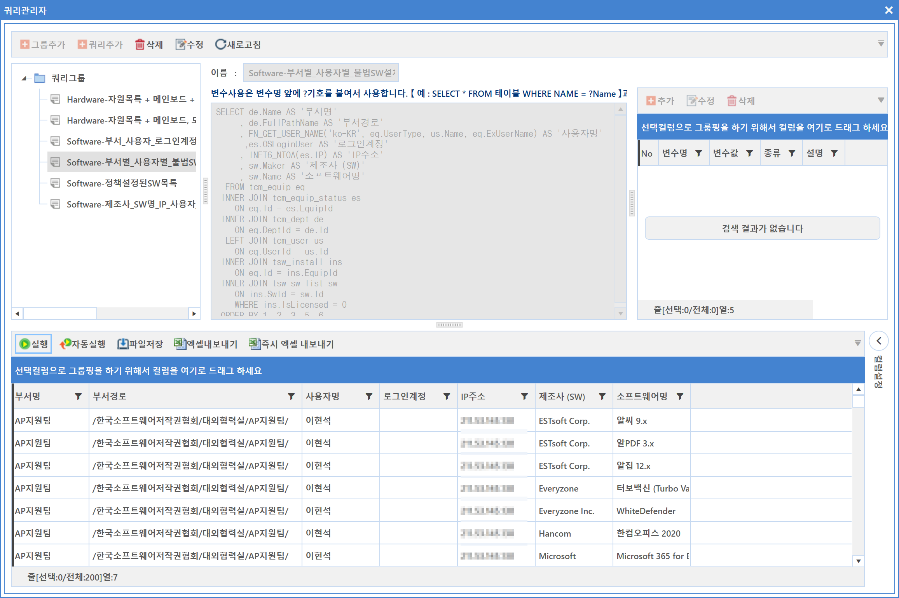
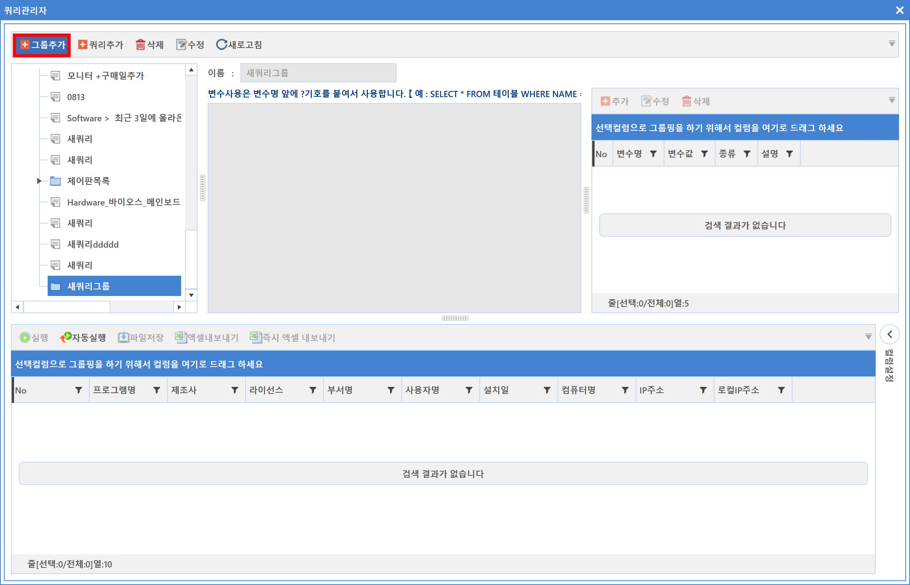
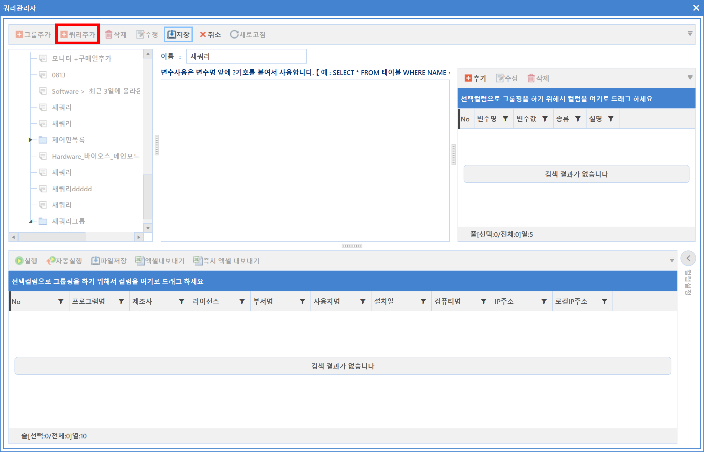
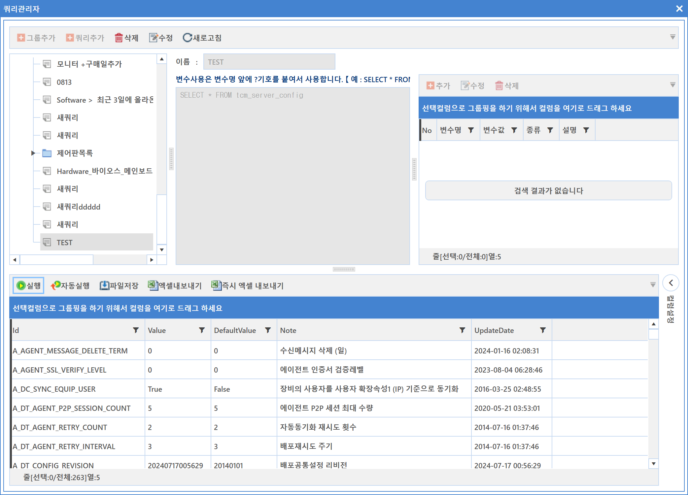
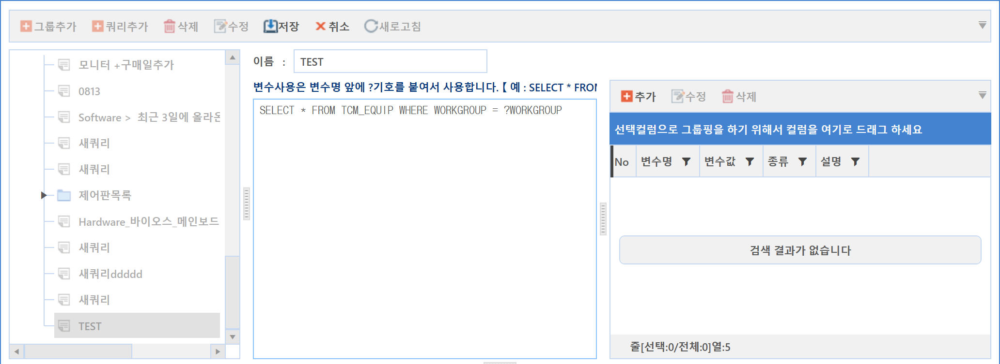
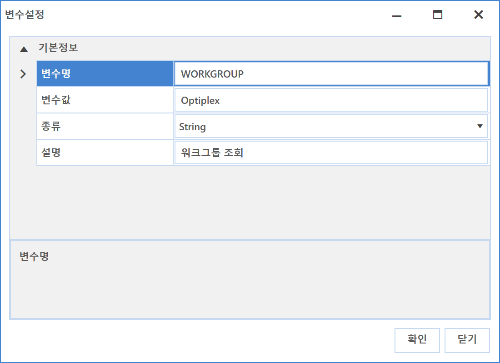
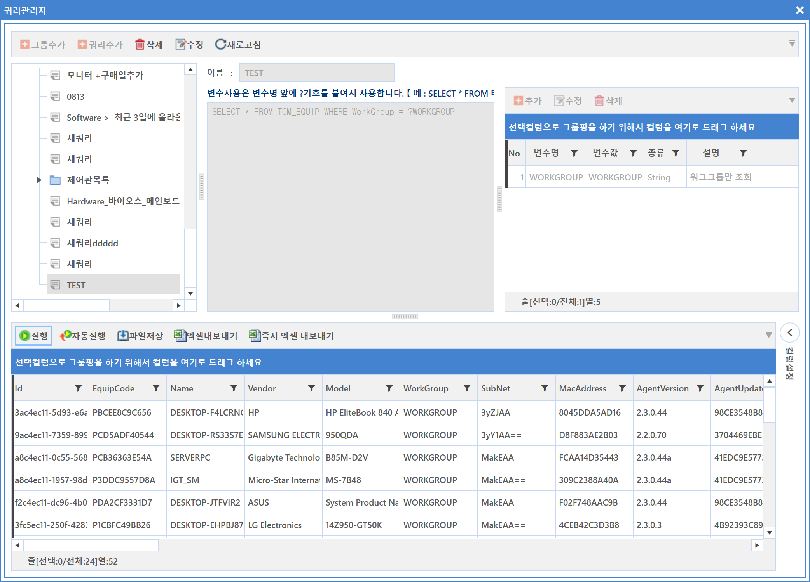
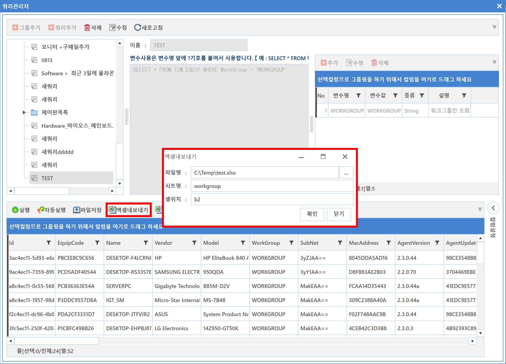

8-1-4. 쿼리관리자
8-1-4. 쿼리관리자
Source: https://www.sweeper.or.kr/etc/manual/8-1-4.html
8-1-4. 쿼리관리자
8. 설정 ›› 8-1. 관리자 설정 ››


쿼리 관리자는 기본 보고서로 제공되지 않는 내용에 대해, 대응하기 위해 개발된 기능입니다. 사용된 SQL 쿼리문을 저장관리할 수 있으며, 조회된 결과를 파일로 저장할 수 있습니다.

쿼리추가 설정방법
-
그룹추가 버튼을 클릭합니다.
-
그룹추가 : 쿼리 그룹을 추가합니다. 생성된 그룹을 선택하고 다시 그룹추가하면 하위 그룹이 생성됩니다.
 -
이름 : 쿼리 그룹명을 입력합니다.
-
그룹 이름을 변경한 뒤 저장 버튼을 클릭합니다.
-
생성된 그룹을 선택하고 쿼리 추가 버튼을 클릭합니다.
 -
이름 : 쿼리명을 입력합니다.
-
쿼리 등록 : SWeeper는 MySQL을 DBMS로 사용합니다. MySQL에서 사용되는 표준 쿼리로 입력합니다.
-
쿼리명을 입력하고 정보를 조회할 수 있는 쿼리를 입력합니다.
 -
입력이 완료되면 화면 하단에 실행/자동실행/파일저장이 활성화 되며 실행 버튼을 클릭하면 쿼리 결과가 조회됩니다.
-
실행 : 쿼리를 실행합니다.
- 자동실행 : 해당 쿼리를 선택했을 경우 자동 실행할 수 있는 설정입니다.
- 파일저장 : 조회 결과를 *.xls 파일 포멧으로 저장합니다.
쿼리 변수값 설정
쿼리에 변수값을 지정하여 관리자가 입력하는 변수 값을 반영하여 조회할 수 있는 기능입니다.
- 쿼리 입력 시 변수가 필요한 변수명 앞에 '?' 기호를 붙여 사용합니다.
예) SELECT * FROM TCM_EQUIP WHERE WORKGROUP = ?WORKGROUP
- 변수지정이 완료되면 우측 변수 설정의 편집 버튼들이 활성화 됩니다.
 -
추가버튼을 클릭하면 파라메터 설정화면이 팝업되며 해당 정보를 입력합니다.
 -
변수명 : 원하는 변수명을 입력합니다.
- 변수값 : 원하는 조회의 정보값을 입력합니다.
- 종류 : 데이터 타입을 설정합니다.
-
설명 : 간단한 설명을 입력합니다.
-
입력이 완료되면 확인 버튼을 클릭합니다.
- 실행버튼을 클릭하여 설정한 변수값을 기준으로 조회되는지 확인합니다.

엑셀내보내기
문서 양식이 이미 작성되어 있는 경우 엑셀내보내기 기능을 이용하여 쿼리 내용을 저장합니다.

- 파일명 : 양식이 작성된 파일을 선택합니다.
- 시트명 : 내보내기 하려는 시트명을 입력합니다.
- 셀위치 : 내보내기 하려는 셀 위치를 입력합니다.
참고사항
본 메뉴에서는 프린트 기능이 제공되지 않습니다.
© Copyright SWeeper Inc.. All Rights Reserved